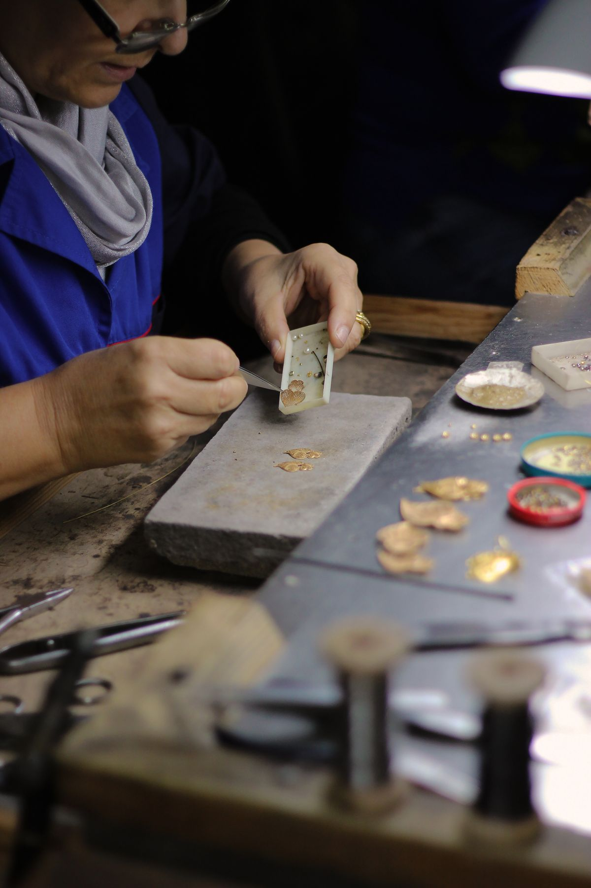

Entry № 2026-114 Bench Koregaon Park, Pune Card November 2026 Book open — 2 commission places for December
Goldsmith — commissions · remodelling · repairs
Gold is weighed, not wished.
Every price at this bench is built in the open, the way a weight is built on a scale: metal by the gram at a printed rate card, making by class, stones by allowance — three lines, itemised, before you commit a rupee. Karat is a fraction, not a compliment: 22 karat is 22 of 24 parts gold, and the card says so.
Bring a commission, a family piece that no longer fits the family, or a repair another bench turned away. It will be weighed in front of you, and the weighing will be written down.

The rate card & the bench calculator
Two tables run this bench. Table 1 prices metal: one basis — fine gold at ₹9,600 a gram — divided honestly by karat, so every rate is the fraction it claims to be. Table 2 prices the hands: making by class, stones by allowance. A commission estimate is never more than those tables added up, and the calculator below does the adding where you can watch it.
An estimate is not a quote. A quote is written after the piece is designed and weighed, and it holds because the metal is bought the day your deposit clears — Entry № 03 in the work book shows what that meant when the price moved mid-commission.
Table 1 — metal, per gram · scrolls sideways on small screens
| Karat | What the fraction means | Fineness (millesimal) | ₹ per gram |
|---|---|---|---|
| 22k | 22 of 24 parts gold | 916 | ₹8,800 |
| 18k | 18 of 24 parts gold | 750 | ₹7,200 |
| 14k | 14 of 24 parts gold | 585 | ₹5,600 |
| 9k | 9 of 24 parts gold | 375 | ₹3,600 |
The bench calculator
Build an estimate. Every figure comes from the printed tables on this page — nothing is invented at the till.
The estimate, itemised
Three lines and a total. If a line ever appears that is not on the card, ask which table it came from.
An estimate from the printed card, not a quote. The written quote follows the design and the weighing, is valid for seven days, and is fixed once the deposit buys the metal. Prices include the hallmarking fee where hallmarking applies.
Table 2 — making & stones · scrolls sideways on small screens
| Charge | What it covers | ₹ |
|---|---|---|
| Class I — Plain | Bands, plain pendants, simple chains — one form, no setting | ₹3,800 |
| Class II — Worked | Texture, multi-part construction, hinges, clasps, chain work | ₹7,500 |
| Class III — Fine | Filigree, stone setting, articulated and matched work | ₹14,000 |
| Small stones | Bench-supplied accent stones, up to 0.25 ct total | ₹6,500 |
| Centre stone | One bench-supplied centre stone, 0.5 ct class, with its papers | ₹38,000 |
| Your own stones | No stone charge — setting labour sits in the making class | ₹0 |
Weight & measure, kept apart
Three weight systems meet at a gold bench and they are not interchangeable. The bench weighs finished work in grams. Metal is priced internationally by the troy ounce — 31.1035 grams, heavier than the ounce in a kitchen. Older Indian trade still speaks in tola — 11.6638 grams — and the pennyweight survives in old ledgers. Convert with the factors printed, never from memory.
The measure explorer
Enter a weight in grams; read it in the other systems. Then check what a karat stamp actually promises.
22 karat = 22/24 fine = 916 on the millesimal scale = 91.7% pure gold. The rest is alloy — silver, copper, zinc — added for hardness and colour.
Printed factors · scrolls sideways on small screens
| From | To | Factor |
|---|---|---|
| 1 troy ounce | grams | 31.1035 g |
| 1 pennyweight | grams | 1.5552 g |
| 1 troy ounce | pennyweight | 20 dwt |
| 1 tola | grams | 11.6638 g |
| 22 karat | fineness | 916 |
| 18 karat | fineness | 750 |
The services register
What the bench takes in, on what basis, and whether the book is open. What moves a price: metal weight first — it is most of most bills — then the making class, then stones. Sentiment is not a line on the card; neither is urgency.
Register · scrolls sideways on small screens
| Service | Who it serves | Basis | Status |
|---|---|---|---|
| New commissions | Private clients | Tables 1 + 2, itemised | Book open |
| Remodelling | Families with inherited pieces | Old metal weighed in front of you, credited at card less 2% | Book open |
| Repairs & resizing | Any karat, any maker | Assessment ₹600, credited against the repair · bench minimum ₹1,500 · resizing from ₹1,200 | Book open |
| Written valuations | Insurance & probate, per piece | ₹1,800 per piece, weighed and photographed | Book open |
| Wedding & festival sets | By commission only | Tables 1 + 2 · deposit buys the metal on day one | Booked to February |
“She weighed my mother's bangle on the counter, in front of me, and wrote the number in the book before she said a word about design. The credit for the old gold is printed in the entry, and so is the ₹5,874 she handed back. Nobody had ever handed me money back at a jeweller's.”
Start an entry
Bring the piece, the idea, or just the weight of gold sitting in a drawer. The first conversation costs nothing and ends with numbers in writing either way.